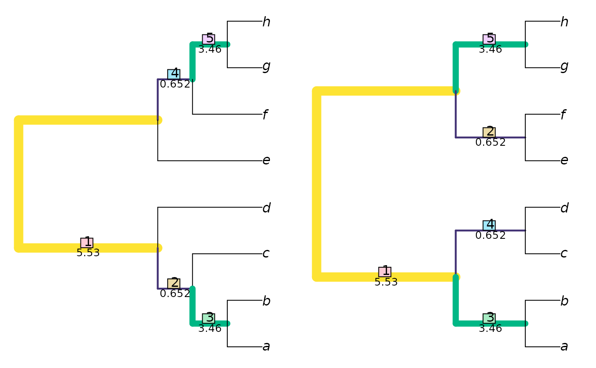

R/tree_distance_info.R, R/tree_distance_mmsi.R
TreeDistance.RdTree similarity and distance measures that measure the amount of phylogenetic or clustering information that two trees hold in common.
TreeDistance(tree1, tree2) MutualPhylogeneticInfo(tree1, tree2, normalize = FALSE, reportMatching = FALSE) VariationOfPhylogeneticInfo(tree1, tree2, normalize = FALSE, reportMatching = FALSE) VariationOfClusteringInfo(tree1, tree2, normalize = FALSE, reportMatching = FALSE) ExpectedVariation(tree1, tree2, samples = 1000) MutualClusteringInfo(tree1, tree2, normalize = FALSE, reportMatching = FALSE) MutualPhylogeneticInfoSplits(splits1, splits2, reportMatching = FALSE) MutualClusteringInfoSplits(splits1, splits2, reportMatching = FALSE) MutualMatchingSplitInfo(tree1, tree2, normalize = FALSE, reportMatching = FALSE) VariationOfMatchingSplitInfo(tree1, tree2, normalize = FALSE, reportMatching = FALSE) MutualMatchingSplitInfoSplits(splits1, splits2, reportMatching = FALSE)
| tree1, tree2 | Trees of class |
|---|---|
| normalize | If a numeric value is provided, this will be used as a
maximum value against which to rescale results.
If |
| reportMatching | Logical specifying whether to return the clade matchings as an attribute of the score. |
| samples | Integer specifying how many samplings to obtain;
accuracy of estimate increases with |
| splits1, splits2 | Logical matrices where each row corresponds to a terminal,
either listed in the same order or bearing identical names (in any sequence),
and each column corresponds to a bipartition split, such that
each terminal is identified as a member of the ingroup ( |
If reportMatching = FALSE, the functions return a numeric
vector specifying the requested similarities or differences.
If reportMatching = TRUE, the functions additionally return details
of which clades are matched in the optimal matching, which can be viewed
using VisualizeMatching.
A tree similarity measure is generated by finding an optimal matching that maximises the total information in common between a partition on one tree and its pair on a second, considering all possible ways to pair partitions between trees (including leaving a partition unpaired).
The returned tree similarity measures state the amount of information, in bits, that the partitions in two trees hold in common when they are optimally matched, following Smith (forthcoming). The complementary tree distance measures state how much information is different in the partitions of two trees, under an optimal matching.
MutualPhylogeneticInfo: Mutual phylogenetic information between two trees.
VariationOfPhylogeneticInfo: Variation of phylogenetic information between two trees.
VariationOfClusteringInfo: Variation of clustering information between two trees.
ExpectedVariation: Estimate expected Variation of
Phylogenetic Information and Mutual Phylogenetic Information for a pair of trees of
a given topology.
MutualClusteringInfo: Mutual Clustering Information of two trees.
MutualPhylogeneticInfoSplits: Calculate mutual phylogenetic information from splits instead of trees.
MutualClusteringInfoSplits: Calculate clustering information from splits instead of trees
MutualMatchingSplitInfo: Mutual Matching Split information of two trees.
VariationOfMatchingSplitInfo: Variation of matching split information between two trees.
MutualMatchingSplitInfoSplits: Calculate variation of matching split information from splits instead of trees.
Each partition in a tree can be viewed as a statement that the 'true' tree is one of those that splits the taxa as specified. This concept corresponds to the concept of phylogenetic information, which views the information content of a pair of partitions as relating to the proportion of phylogenetic trees that are consistent with both partitions.
This proportion gives rise to the Mutual Phylogenetic Information similarity
measure (MutualPhylogeneticInfo), and the complementary
Variation of Phylogenetic Information distance metric
(VariationOfPhylogeneticInfo).
An information-theoretic take on the MatchingSplitDistance offers a
relaxed interpretation of this measurement, which attributes some information
to similar yet contradictory splits. This metric is implemented in
MutualMatchingSplitInfo and VariationOfMatchingSplitInfo.
Alternatively, each partition can be viewed as a statement that the taxa
are subdivided into the two groups specified. On this view, the
information content of a pair of partitions corresponds to their
mutual clustering information (Meila 2007, Vinh2010), giving rise to their
Mutucal Clustering Information and Variation of Clustering Information
similarity/distance metrics (MutualClusteringInfo, VariationOfClusteringInfo).
This latter approach is optimal in many regards, and is implemented, normalized
against the total information present, in the convenience function TreeDistance.
If normalize = TRUE, then results will be rescaled from zero to a nominal
maximum value, calculated thus:
MutualPhylogeneticInfo, MutualClusteringInfo, MutualMatchingSplitInfo:
The information content of the least informative tree.
To scale against the information content of the most informative tree, use
normalize = pmax.
VariationOfPhylogeneticInfo, VariationOfClusteringInfo,
VariationOfMatchingSplitInfo: The sum of the
(phylogenetic or clustering) information content of the two trees.
Meilă M (2007). “Comparing clusterings---an information based distance.” Journal of Multivariate Analysis, 98(5), 873--895. doi: 10.1016/j.jmva.2006.11.013 .
Smith MR (2019). “Information theoretic Generalized Robinson-Foulds metrics for comparing phylogenetic trees.” Forthcoming.
Vinh NX, Epps J, Bailey J (2010). “Information theoretic measures for clusterings comparison: variants, properties, normalization and correction for chance.” Journal of Machine Learning Research, 11, 2837--2854. doi: 10.1145/1553374.1553511 .
Other tree distances: KendallColijn,
MatchingSplitDistance,
NyeTreeSimilarity,
RobinsonFouldsInfo
{ tree1 <- ape::read.tree(text='((((a, b), c), d), (e, (f, (g, h))));') tree2 <- ape::read.tree(text='(((a, b), (c, d)), ((e, f), (g, h)));') tree3 <- ape::read.tree(text='((((h, b), c), d), (e, (f, (g, a))));') # Best possible score is obtained by matching a tree with itself VariationOfPhylogeneticInfo(tree1, tree1) # 0, by definition MutualPhylogeneticInfo(tree1, tree1) PartitionInfo(tree1) # Maximum mutual phylogenetic information # Best possible score is a function of tree shape; the partitions within # balanced trees are more independent and thus contain less information PartitionInfo(tree2) # How similar are two trees? MutualPhylogeneticInfo(tree1, tree2) # Amount of phylogenetic information in common VisualizeMatching(MutualPhylogeneticInfo, tree1, tree2) # Which clades are matched? VariationOfPhylogeneticInfo(tree1, tree2) # Distance measure VariationOfPhylogeneticInfo(tree2, tree1) # The metric is symmetric #' # Are they more similar than two trees of this shape would be by chance? ExpectedVariation(tree1, tree2, sample=12)['VariationOfPhylogeneticInfo', 'Estimate'] # Every partition in tree1 is contradicted by every partition in tree3 # Non-arboreal matches contain clustering, but not phylogenetic, information MutualPhylogeneticInfo(tree1, tree3) # = 0 MutualClusteringInfo(tree1, tree3) # > 0 }#> [1] 7.547955